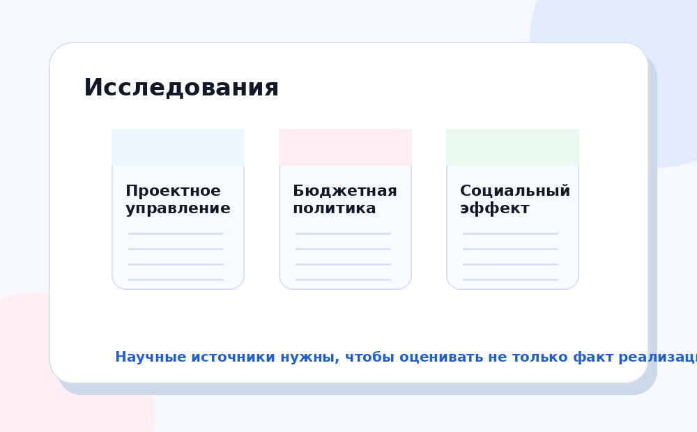

Научные и аналитические источники помогают рассматривать нацпроекты не только как список мер, но и как инструмент управления развитием.

Позволяет понять, почему государство использует формат проектов: цели, сроки, показатели, ответственные исполнители.
Показывает, что результаты зависят не только от планов, но и от финансирования, исполнения и контроля.
Помогает оценивать влияние мер на семьи, здоровье, образование, занятость и качество жизни.
Данные ВЦИОМ показывают, насколько люди узнают проекты и какие меры действительно воспринимают как значимые.
Научная база нужна не для сложного языка, а для доказательности. Хороший анализ опирается на несколько типов источников: официальные документы, данные исполнения, социологию, научные статьи и практические кейсы.